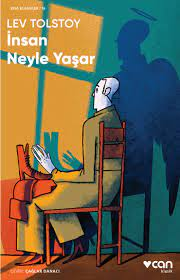

Merhaba ben Sinem. 1997 yılında Samsun'da doğdum. Ankara'da yaşıyorum. Web geliştirme ile ilgileniyorum. Hayvanları çok severim.
- İnsan Ne İle Yaşar? (Lev Tolstoy)
İnsan Ne İle Yaşar? , 1885'de Rus yazar Lev Tolstoy 'un yazdığı kısa hikâyedir. 1885'de yayınlanan İnsan Ne İle Yaşar ve Diğer Hikayeler adlı kitapta yer alan kısa öykülerden biridir.
"Erken gelmiş bir bahar günü, ormanda yalnızdım, ormanın seslerini dinliyordum. Son üç yıldır süregelen çırpınmalarımı, Tanrı'yı arayışımı, sürekli bir biçimde sevinçten umutsuzluğa sıçrayışlarımı düşünüyordum... Birden, ancak Tanrı'ya inandığım sıralarda yaşadığımı anladım. Sırf onu düşünmekle bile, yaşamın sevinçli dalgaları kabarıyordu benliğimde. Çevrede her şey canlanıyor, her şey bir anlam kazanıyordu. Ama Tanrı'ya inanmamaya başladım mı yaşam duruveriyordu."